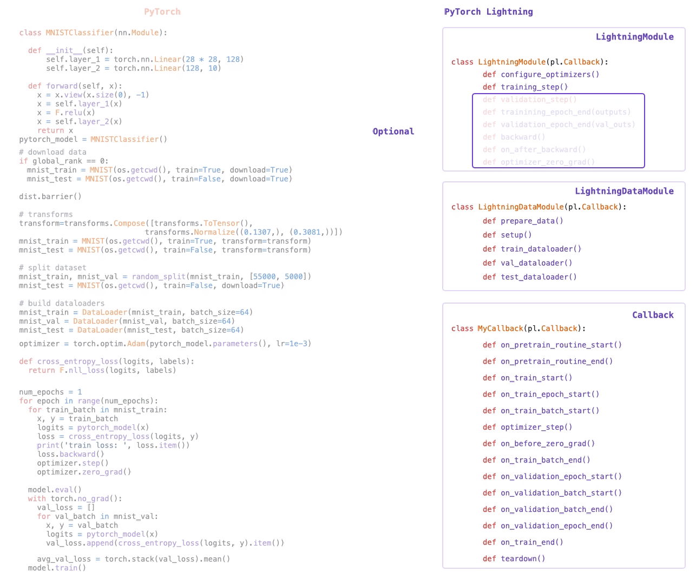
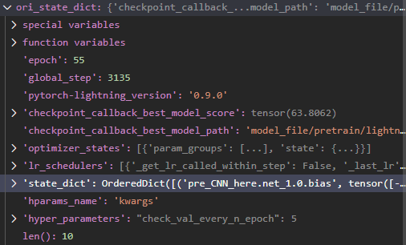

Pytorch-Lightning
关键函数

上图展示了几个关键函数，其中最重要的是LightningModule这个类里的前两个；实际上，剩下两个类的函数其实也可以在LightningModule中定义，只不过如果定义三个类，可能函数的更加清楚。
撸Docs的笔记
-
几个细节
pytorch-lightnint中没有自动初始化网络参数的封装，初始化网络参数需要自己做如何在
LightningModule的类内来访问相关的ckpt以及ymal的存储地址呢？(默认的是..../lihgtning_logs/version1/这样的)这个根据不同的传入的不同的
logger来决定，对于默认的情况（默认tensorboard），可以访问变量：self.logger.log_dir，还有其他的相关的路径，也可以访问，不过都是部分路径了，比如self.logger.save_dir, self.logger.version等等。PS：若 logger变了，那么可能需要访问不同的变量来找路径了。
实际使用中需要注意的点
向 pl.Trainer(), class MModel(pl.LightningModule)和class MyData(pl.LightningDataModule)传入参数
建议在两个自己写的类中分别设置自己的
add_specific_para()，来add专门的变量继承
pl.LightningDataModule的子类类定义示例1
2
3
4
5
6
7
8
9
10
11
12class BulidMyData(pl.LightningDataModule): #是定义自己的 Datalosader 的类，实际上也可以合并在pl.LightningDataModule子类中
def __init__(self, train_path, test_path, batch_size, **kwargs):
self.train_path = train_path
self.test_path = test_path
self.batch_size = batch_size
....
def add_dataset_specific_args(parent_parser):
parser = ArgumentParser(parents=[parent_parser], add_help=False)
parser.add_argument('--train_path', type=str, default='/home/zpy/MyProject/VeinDataset/3d_vein/roi_clahe/train')
parser.add_argument('--test_path', type=str, default='/home/zpy/MyProject/VeinDataset/3d_vein/roi_clahe/test')
return parser- 注意这个类中，类内的变量的赋值需要使用
self.para = para，并且一定有不定参数**kwargs，防止参数传多了的时候报错。 - 如果在此类内要使用这些变量，就直接使用
self.para叫出来就好
- 注意这个类中，类内的变量的赋值需要使用
继承
pl.LightningModule的子类类定义示例1
2
3
4
5
6
7
8
9
10
11
12
13
14
15class MModel(pl.LightningModule):
def __init__(self, learning_rate,weight_decay, batch_size, **kwargs):
super().__init__()
# Architure
self.layer1 = nn.Linear(128,64)
self.layer2 = nn.Linear(64,32)
self.layer2 = nn.Linear(32,2)
## Get para
self.save_hyperparameters() #！！！注意此函数！！！
def add_model_specific_args(parent_parser):
parser = ArgumentParser(parents=[parent_parser], add_help=False)
parser.add_argument('--learning_rate', type=float, default=3e-4)
parser.add_argument('--weight_decay', type=float, default=1e-5)
return parser- 在这个子类的类初始化函数中，最好不要采用上面的
self.para=para的赋值方式(可以用，但不建议) - 执行函数
self.save_hyperparameters()之后，访问类内变量，可以采用self.hparams.para_name的方式。- 执行这个函数后，该类中会有一个
self.hparams的字典，这个字典内保存了所有的参数（如果以**var(args)方式传进来的，那就是全部的参数，此时只需要保证需要的参数在里面就行），同时在对应的路径也会生成hparams.yaml文件，其中保存了所有的参数
- 执行这个函数后，该类中会有一个
- 类初始化函数中一定要有
**kwargs
- 在这个子类的类初始化函数中，最好不要采用上面的
传入参数代码示例
1
2
3
4
5
6
7
8
9
10
11
12
13
14
15
16
17parser = ArgumentParser(add_help=False)
parser.add_argument('--batch_size', type=int, default=32)
parser.add_argument('--max_epochs', type=int, default=500)
parser.add_argument('--check_val_every_n_epoch', type=int, default=5)
parser.add_argument('--gpus', type=int, default=1)
parser.add_argument('--fast_dev_run', type=bool, default=False) #快速实验
parser = BulidMyData.add_dataset_specific_args(parser) #添加那些指定的参数
parser = MModel.add_model_specific_args(parser)
args = parser.parse_args()
# mdata = BulidMyData.from_argparse_args(args) #也可以这么写
mdata = BulidMyData(**vars(args)) #！ 注意俩星号
model = MModel(**vars(args)) #！ 注意这里怎么写的
trainer = pl.Trainer.from_argparse_args(args) ## 注意这里的函数，多余的参数会被过滤掉，传多了没事。
trainer.fit(model, datamodule=mdata)
想在每跑完一次Training_step()之后执行点类似cal metric的op，可能是每个step后或者每个epoch之后，怎么办?
同
validation对应函数分别为
Training_step_end()和Training_epoch_end()，把需要的操作写在这个函数里面。上述两种函数，写出来都会自动补全成下图
1
2
3def validation_epoch_end(self, outputs):
...
return result #对应的属于EvalResult或者TrainResult其中，函数参数outputs不用改，这个函数也不用显式调用，outputs是上面的对应的
_step函数的输出（应该是EvalResult或者TrainResult）
为了能够正常的传送参数，下图是示例
1
2
3
4
5
6
7
8
9
10
11
12
13
14
15
16def validation_step(self, batch, batch_idx):
loss, score = self._share_step(batch, batch_idx)
result = pl.EvalResult(checkpoint_on=loss)
result.log('Val_loss',loss,on_step=False, on_epoch=True,logger=False)
result.score = score.detach().cpu().numpy() # 注意这句
return result
def validation_epoch_end(self, outputs):
if self.current_epoch==0: #当current_epoch==0的时候，val似乎只会跑1个batch，不知道为什么
aaa = pl.EvalResult()
else:
score = outputs.score
self.logger.experiment.add_scalar('score', score, global_step=self.current_epoch) # 注意后面的self.current_epoch很重要
...
aaa = pl.EvalResult(checkpoint_on=torch.from_numpy(score))
return aaa有几个需要注意的点:
.log函数仅仅用来log的，虽然使用这个函数之后，能够通过result['XXX']来访问，但是并不推荐，我没用过- 建议这种：
result.score = score.detach().cpu().numpy()，如果等号右边是一个Tensor()，会报错KeyError，不知道为啥，可能是BUG（当前pytorch-lightning版本是v0.9.0），所以直接变成ndarray在操作 - 不知道为什么，上图中，如果我直接在下面的函数中
return outputs（即把输入直接送出去），会报错，所以在后面重新实例了一个，不清楚有什么影响，目前还没看到影响。 checkpoint_on参数需要的是Tensor类型，我直接从numpy转换了，目前没有看到有什么影响，可以正常跑- 建议在
_epoch_end()函数里就不用Train/EvalResult来做.log了，而是直接使用logger吧，上面的代码中，默认是tensorboard的函数，查一下API就好
https://github.com/PyTorchLightning/pytorch-lightning/issues/3167
https://pytorch-lightning.readthedocs.io/en/stable/results.html （Docs 写的不清楚，没说不能用Tensor赋值，对应上面第二点）
优化器、学习率衰减策略
-
不知道Log到哪去了，按照这个写了一下，没找到log到哪去了
自动找合适的lr
没用过，mark一下，点这里，还有可以自己找最大的batch size的函数，自己去查doc吧
- 如何设置optimizer和学习率衰减策略，点这里
load weight出问题的各种情况
很好的一个理解这种情况的教程：https://zhuanlan.zhihu.com/p/53927068
可能会报错：
1 | > myModel = Model_1() #Model_1继承自 nn.Module 类 |
Missing key(s) in state_dict表示其后面跟着的参数，在我们定义的myModel里有，但是在我们load进来的state_dict是没有对应的参数这里没有对应的参数，有可能是名字没有对上，比如我们load 进来的可能名字是
module.net_1.0.weight，但是我们现在用的模型的对应这一个参数的名字却是net_1.0.weight。（上面的链接解释了为什么会出现一些前缀）这里我觉的报错逻辑是：既然我想load参数，那么我网络的权重之类的很重要，所以要是程序load进来的数据里没找到对应的，就是很严重的问题了，就会报错。如果后续确定，Miss的那些确实不是我们想要的，可以添加一个参数
strict=False，忽略miss的键（那么解决这里的问题就简单了，直接在load的进来的数据里，把对应的键名给改了就行了，如把
module.net_1.0.weight改成net_1.0.weight，这样就能和我们新的myModel匹配上了）解决方式（参考代码）：
1
2
3
4
5
6
7
8
9
10# original saved file
state_dict = torch.load(PATH)
# create new OrderedDict that does not contain `module.`(prefix)
from collections import OrderedDict
new_state_dict = OrderedDict()
for k, v in state_dict.items():
name = k[7:] # remove `module.` 这里 model. 的长度是7
new_state_dict[name] = v
# load params
model.load_state_dict(new_state_dict)Unexpected key(s) in state_dict表示load进来的数据里面，有后面这些东西，但是我们目前定义的模型myModel并不需要这样的数据，不知道应该把这些数据分配给谁。
本质是什么？
理解了这个，就知道为什么报错了。
nn.Module保存下来的ckpt(其他形式应该如此，我没有尝试)是什么？是有序字典（OrderedDict）（这是什么呢？我还没有看，反正暂时知道和下面的不一样就行了）
在本节开始的博客里，可以看到，如果定义网络层的时候的时候使用了ModuleList来又一次进行组织，就可能会添加前缀，保存成
.ckpt的时候前缀就会保留，我感觉pl.LightningModule里面在封装得时候可能在哪里调用了ModuleList，导致出现了前缀load错误。pl.LightningModule保存下来的.ckpt是什么？是普通字典
在
pl.LightningModule中一定将这个对应的nn.Module的函数torch.save(model.state_dict(), PATH)封装了一下，默认情况下，使用TrainResulut(minimus=loss, checkpoint_on=Tensor)或者EvalResult(checkpoint_on=Tensor)来监控某一个Tensor并自动保存数据文件.ckpt中，包含了真的好多好多东西，如下图：

可以看到，里面包含了使用的
pytorch-lightning的版本，保存此文件时，模型跑了多少epoch，此时监控的Tensor(checkpoint_on=)的值是多少，文件保存的位置在哪，还有很多，可以自己load进来看看，牛逼！好像要啥有啥！而其中可以被
nn.Module加载的权重，却保存在了上图的state_dict中，可以看到，这是一个OrderedDict类型。因此，将这个东西传给我们的模型，是我们的当务之急。那么就会出现下面的交叉load情况
使用
pl.LighyningModule保存.ckpt，却在继承nn.Module的模型中load参数这就是我遇到的情况：那么这种情况里，方式如下：
1
2
3
4
5
6
7
8
9
10
11
12
13self.pre_CNN_here = Model.lstmSmall.smallCNN(256) # 注意这里类Model.lstmSmall.smallCNN()继承自nn.Module
# 把 pl.LightningModule 保存的 ckpt load进来，可以debug一下，看看里面哪些很重要的key
ori_state_dict = torch.load(model_path)
# 这里创建一个空的OrderedDict()，来取出来我们load进来的字典里'state_dict'的网络参数
new_state_dict = OrderedDict()
for k, v in ori_state_dict['state_dict'].items():
if 'pre_CNN_here' in k: # 这是我的前缀，要把这个删掉
name = k[13:] # remove 'pre_CNN_here.', 这里 pre_CNN_here. 的长度是7
new_state_dict[name] = v
else:
name = k
new_state_dict[name] = v
self.pre_CNN_here.load_state_dict(new_state_dict)使用
pl.LighyningModule保存.ckpt，在继承pl.LighyningModule的模型中load参数这里也遇到了，但是最后用前一个方法解决了。
在我的情况中，我遇到了本节刚开始的错误，每个层都添加了新的前缀，然后不能匹配key导致不能传入参数，这里我翻阅了源代码，发现如果需要按照上面的思想进行前缀的修改，需要对源代码进行修改(因为
load_from_checkpoint接受的是path参数而不是Dict)，大概在源码中pl_load之后对checkpoint按照上面的思想进行操作，不同的是我们需要将去掉了前缀的new_state_dict赋值给ori_state_dict['state_dict']，即1
2# 这里是处理前缀的过程，类似上面的
ori_state_dict['state_dict'] = new_state_dict使用
nn.Module的torch.save(model.state_dict(), PATH)保存.ckpt，在继承nn.Module的模型中load参数这里要是遇到前缀的问题，可以按照上面的方式进行解决，也要注意
map_location参数，看看是不是在不同的设备上load了参数，这里可以通过上面的链接进行学习使用
nn.Module的torch.save(model.state_dict(), PATH)保存.ckpt，在继承pl.LighyningModule的模型中load参数没遇到过：这里应该是可以直接创建一个新的字典，按照对应的组成形式，但是需要看看源码，好像里面有一些必须有的key，另外也要注意，
(pl.LightningModule).load_from_checkpoint()函数接受数据文件的形式是仅接受path，也就是说要不改源码，要不按照其格式（必须有的key）重新保存一下。
Model 1包含 Model 2，同时Model 1中还有新的层
遇到这种情况，往往需要在model 1的__init__()函数中load Model 2 中的部分或者全部权重，在我的情况中，我load了全部model2的预训练参数，作为model 1中的一层或者几层，然后主要训练model1中新的层
不太清楚的坑
on_train_epoch_end()和trianing_epoch_end()两者有什么区别？后者的函数参数默认是training_step()的输出result(TrainResult类)，但是前者的参数不知道怎么传进去欸，也没看到怎么用，为什么用这个函数。CallBack是什么，应该怎么理解？